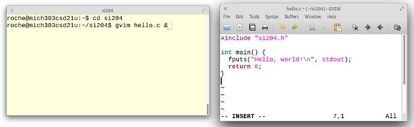
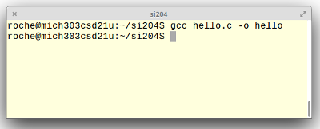
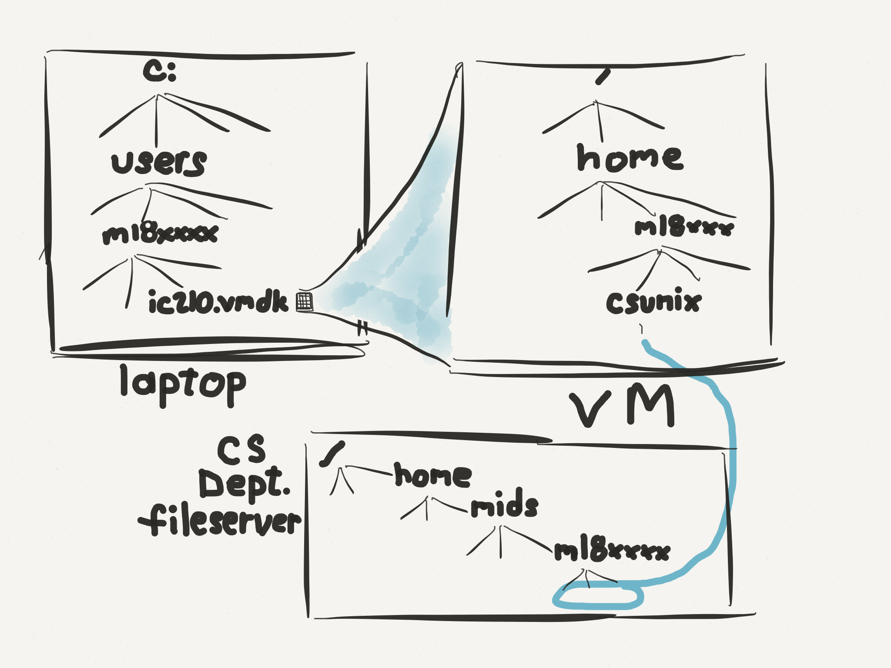

This course is an introduction to programming. C is the language we use, but this course is not about learning C. It is about learning to program! “How to program” is bigger than “C” or any other language.
Programming is a creative process, in which you construct a model world inside the computer that interacts with the real world via keyboards, mice, monitors, speakers network connections, and so forth. It’s very rewarding, exciting and - very often - frustrating. We are going to start slow and focus on solid understanding of foundational concepts, so please be patient with the fact that your programs will usually be reading and writing text and not interacting with all the fancy peripherals mentioned above. You’ll apply your programming skilz to fun graphicsy stuff in later semesters: this semester we focus on programming itself.
You really should review the computer architecture section of Cyber 1. Here’s a link to an archived SI110 site.
In SY110 last year all of you got exposed to Javascript programs. You’ll notice that what we do here feels a lot more low-level, and requires a lot more discipline. The main reason is that Javascript programs are executed by the browser, whereas C programs are actually executed by the physical machine. That fundamental fact leads to a lot of the differences you’ll observe. Javascript is an interpreted language. This means that the code you write is read and processed by the browser, which then executes the steps demanded by that code. C is a compiled language. This means that the code you write is read and processed by a special-purpose program called a compiler, which translates it into the zeros and ones that the CPU speaks, and stores it in an executable file. At some later point, the OS is told to start the program stored in the executable file running, and the CPU initiates its fetch-decode-execute cycle on the code contained in that file.
Here’s what all of these steps look like:
Use an editor to create the file hello.c containing the source code for the program.
Opening hello.c in GVim
Use a compiler (gcc in this case) to translate the human-readable C source code into an executable program hello.
Compiling hello.c
(Actually, there are two steps here, compilation and linking, but gcc does both of them for us and we won’t worry about the distinction for a while.)
Use the OS to initiate execution of (i.e. start te fetch-decode-execute cycle on) the program hello.
You’re going to be writing and running a lot of programs this semester, so the question of where to do this work is important, as is the question of where to store it. We’ll take some time in class to address that question.
Where to work. You will be writing and running your programs either on the CS Department Unix lab machines, or on the VM you’ve installed on your laptop. You will probably want to bounce back and forth - work on something in the lab, continue work on your laptop VM later.
Where to store your work. You have three basic places to store files
your laptop’s filesystem,
your VM’s filesystem, or
your CS Department home directory.
Storing stuff on your laptop’s Windows filesystem is not a very convenient option because the writing, compiling and running will be happening either on the CS Department Unix lab machines or on your VM. Anything on your laptop’s Windows filesystem would have to be constantly copied back and forth.
Storing stuff on your VM’s filesystem is nice in some ways - you can work regardless of whether or not you have network access, for example. On the other hand, it’s got some serious negatives. If your laptop dies you lose all your work. If the file on your laptop that contains the VM’s state gets corrupted, you lose all your work. Finally, the work you do in the lab is not available on your VM and vice versa, undless you go back to constantly copying files back and forth. So …
… storing stuff in your CS Department home directory is the best option. It’s backed up nightly, accessible from the computer lab and, thanks to the “csmount” script that’s preloaded on your VMs, it’s accessible from your VM - as long as you have a network connection.
Warning! If you “pause” your VM before exiting VMPlayer (as opposed to shutting the VM down), we recommend you run the csunmount script first.
Our recommendation. Use the csmount script and keep everything in your CS Department home directory.
Overview of laptop, VM and CS dept filesystems
A quick activity your instructor will guide you through and explain:
In your VM home directory, give the ls command. Note the directory “csunix”. Give the command cd csunix, then ls. Note: it’s inaccessible.
Run cd .. to go back to your home directory
Run csmount.
Then cd to csunix again and do an ls. Now there’s a file README.
Give the command cat README NOTE: you instructor will explain what’s happened and why and recall: cd, ls and cat
Run command cd ~ (takes you back to your VM home directory) Run command csunmount Do ls csunix (now it’s empty again) Do csmount (files are back!)
Now you’re going to write your first C program. Hooray! For now, it’s mostly about following the directions to compile and run your program, but we’ll see very soon what all of this means.
One unique feature of the C language is that there are no input/output capabilities built in to the language. That’s important if you’re writing the code for, say, a wireless router, but for us we’d like to be able to see what’s going on!
The solution is to use standard libraries, which are sort of like pre-built collections of helper programs that let your C code do more interesting things. For the first part of this class, we’re going to use just one library called si204.h.
Go ahead and click on that link and check it out! You won’t understand what’s in there now, since we’re just getting started. In fact, that’s a big benefit of using a library — you get to use code that you don’t understand yet. For now, you should just download this file and remember to copy it into every directory where you’re going to write code. It has to be in the same directory as any code you compile.
The csmount script makes the files and directories in your CS Department home directory accessible from your VM, as if they were stored on your VM. You can edit, compile, run, etc. and all the computing is done on your VM (ultimately by your laptop’s CPU), even though the files are stored on a CS Department fileserver. Another option is to “ssh” to a CS Department lab machine in order to bring up a shell whose input and output come from / go to your VM, but whose commands are executed on the lab machine, not your VM/laptop.
Ssh is not the recommended approach for this course, but it is an important tool that you’ll see over and over during the course of your time here.
At the end of the notes for almost every lecture will be a couple of example problems with solutions. Everyone likes to see examples of code, so that’s what we give you!